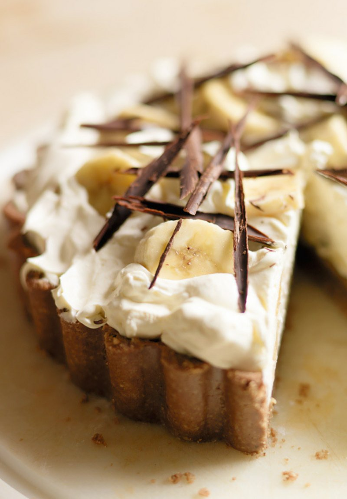

The Hairy Banoffee Pie
No hairs! Bananas! Cream! Chocolate!
Say no more. Let's get baking
Info
Ingredients
Toffee filling
- 115g butter
- 115g soft dark brown sugar
- 397g can sweetened condensed milk
For the topping
- 23cm loose-based tart tin. 4cm deep to contain the filling
- 5 ripe but firm medium bananas
- 450ml double cream
- 1 tsp fresh lemon juice
- 25g plain dark chocolate, coarsely grate, or chocolate curls
Biscuit Base
- 75g butter
- 300g chocolate oaty biscuits, i.e Hobnobs
Method
-
To make the base, melt the butter in a small pan. Break the biscuits into chunky pieces
and blitz them in a food processor. With the motor running, add the melted butter and blend until mixed.
Or bash together in a strong platic food bag with a rolling pin.
-
Tip the biscuit mixture into centre of tart tin and press it firmly into the base and sides.
Make sure mixture is evenly distributed, especially where the base meets the sides. Chill for 30 minutes until set.
-
To make the toffe filling, melt the butter in a non-stick pan and stir in the sugar. Cook over a low heat, always stiring, and until
the sugar dissolved and the butter and sugar look smoth with no oil at the surface. Add the condensed milk
and bring to a gentle simmer, stirring constantly. Cook for 3 minutes, stirring, until mixture turns a deep, creamy caramel brown.
Pour toffee gently onto biscuit base and quickly smooth over the surface. Leave to chill for at least an hour. And up to 8 hours before topping.
-
Just before serving, lightly whip the cream and it should make very soft peaks, standing. Diagonally slice 4 bananas and scatter them over
over the toffee. Fold the rest lightly into the cream and spoon gently on top.
-
Slice the remaining banana and put into a bowl with lemon juice. Toos very gently, to stop bananas going brown. Decorate the top with the
lemony banana slices, poking them into the cream randomly, then sprinkle the pie with grated chocoloate.
- Serve at once and keep the serving slices huge
Back to home